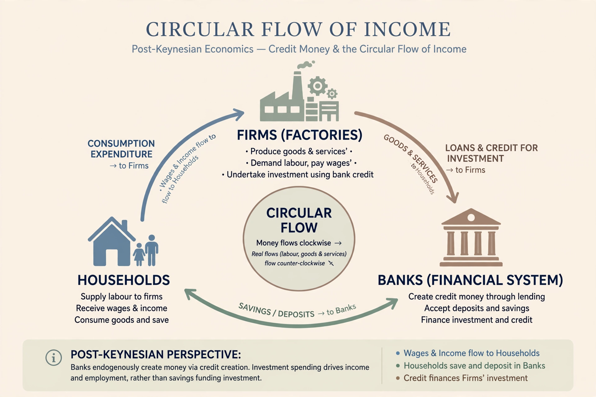

Post-Keynesian economics is a school of economic thought rooted in John Maynard Keynes's General Theory (1936), developed by economists including Joan Robinson, Nicholas Kaldor, Michał Kalecki, Hyman Minsky, and Paul Davidson. It should not be confused with New Keynesian economics.
Post-Keynesians emphasise fundamental uncertainty (non-ergodicity), effective demand as driving output in both short and long run, endogenous money, historical time, the principle that demand creates its own supply, income distribution, and the instability of capitalist finance (Minsky's financial instability hypothesis).
Fundamentalist Keynesians (Davidson, Keynes's uncertainty), neo-Ricardian/Sraffian, Kaleckian, institutionalist, and Modern Monetary Theory (MMT) are often grouped under the broad post-Keynesian umbrella, though they differ.
Mainstream economists criticise its lack of formal microfoundations and formal modelling; post-Keynesians reply that realism matters more, particularly after the 2007–08 financial crisis revived interest in Minsky.
See also: Keynesian economics, John Maynard Keynes